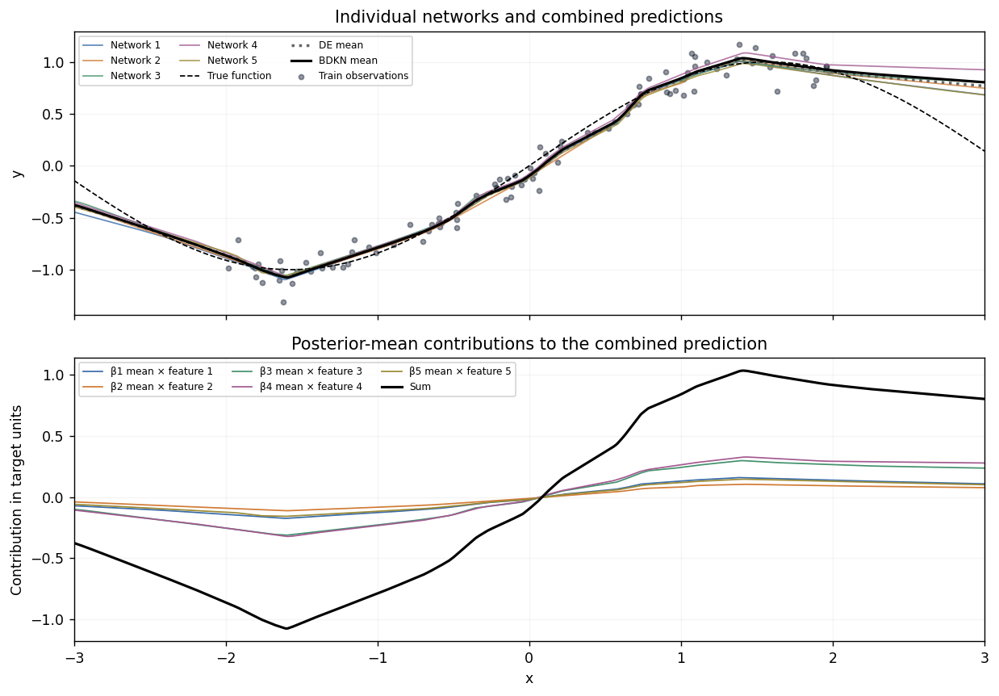
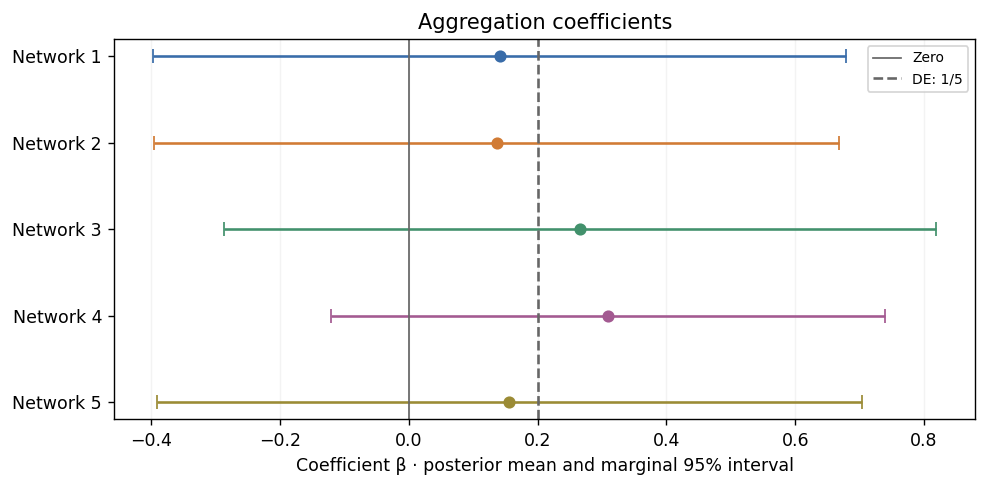
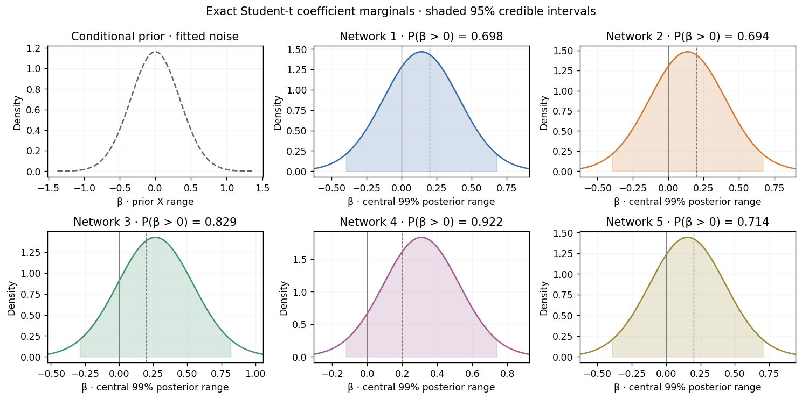
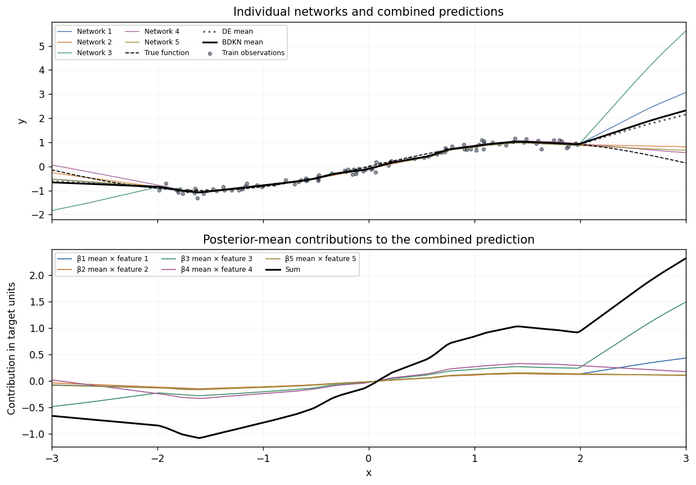
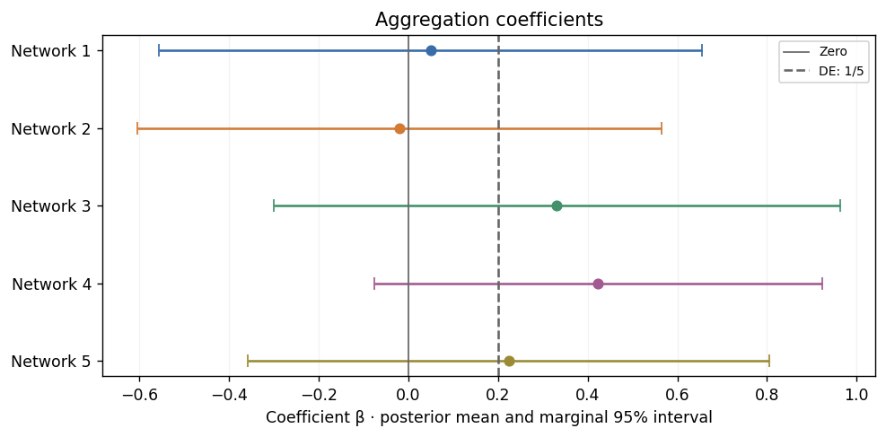
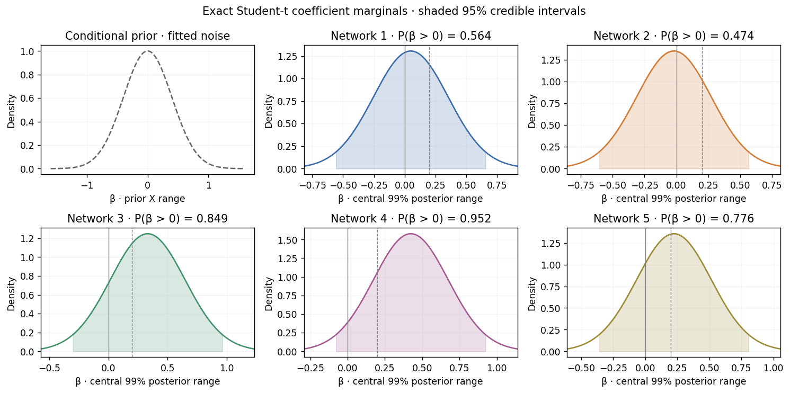
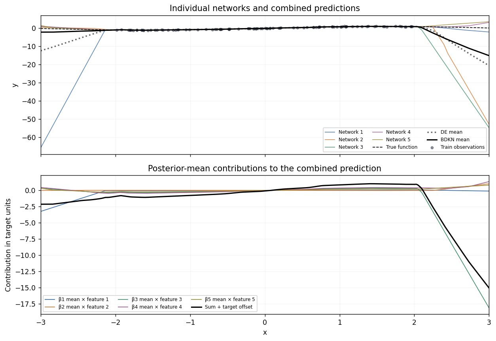
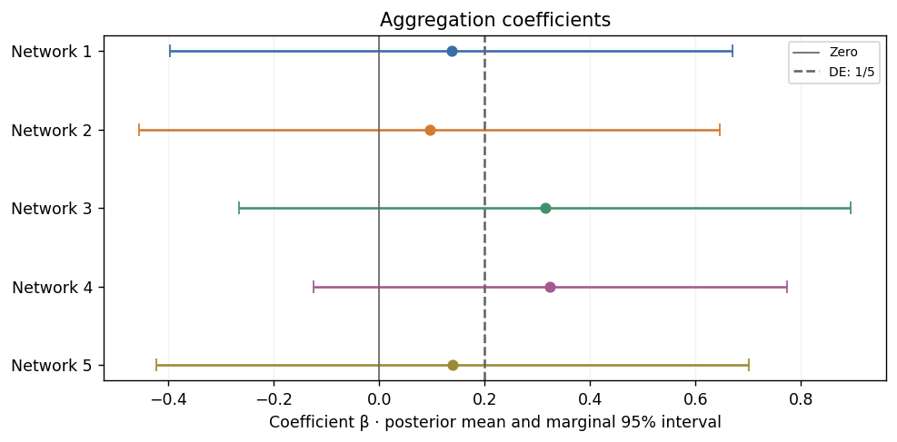
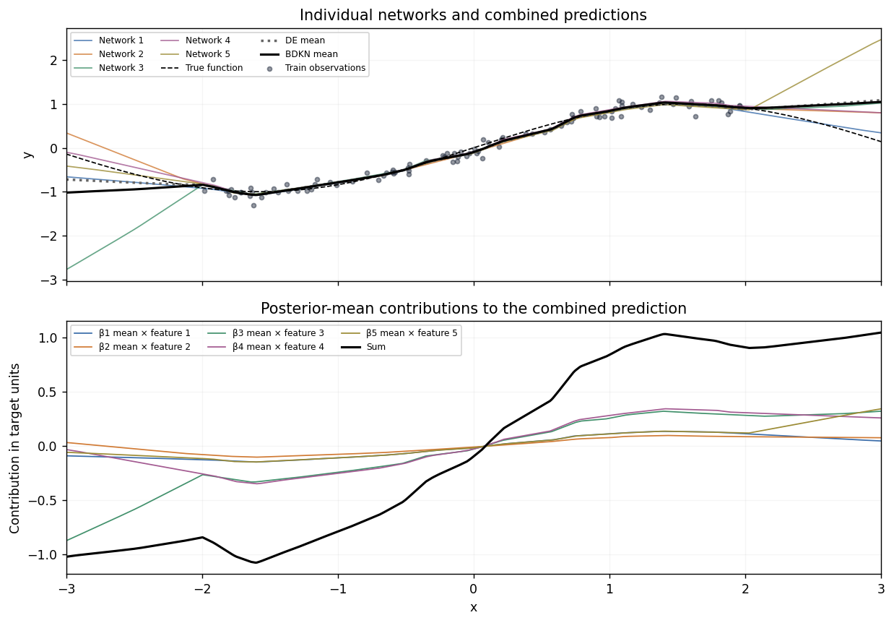

Regression comparison
Download resultsAggregation weights
Coefficients can be negative and need not sum to one. Intervals describe coefficient uncertainty; the dashed reference is DE’s fixed 1/H weight.
BDKN



Each density panel uses its own X range for readability; coefficient intervals above share a common axis. Prior reference conditions on fitted noise. Contribution shares use held-out inputs; test targets are used only for scoring.
| Network | β mean | 95% low | 95% high | P(β > 0) | Contribution share | Test RMSE | Test NLL |
|---|---|---|---|---|---|---|---|
| 1 | 0.15904 | -0.40041 | 0.71849 | 0.71299 | 0.15609 | 0.15863 | 0.26733 |
| 2 | 0.10348 | -0.42784 | 0.63481 | 0.64999 | 0.10236 | 0.16842 | 0.62251 |
| 3 | 0.29566 | -0.28358 | 0.87490 | 0.84317 | 0.28899 | 0.17476 | 2.61466 |
| 4 | 0.30206 | -0.08629 | 0.69041 | 0.93702 | 0.30991 | 0.20717 | 1.26128 |
| 5 | 0.14872 | -0.40583 | 0.70327 | 0.70207 | 0.14264 | 0.15734 | 0.32964 |
Functional repulsion · BDKN



Each density panel uses its own X range for readability; coefficient intervals above share a common axis. Prior reference conditions on fitted noise. Contribution shares use held-out inputs; test targets are used only for scoring.
| Network | β mean | 95% low | 95% high | P(β > 0) | Contribution share | Test RMSE | Test NLL |
|---|---|---|---|---|---|---|---|
| 1 | 0.14126 | -0.39676 | 0.67929 | 0.69821 | 0.15048 | 0.70466 | 33.50375 |
| 2 | 0.13656 | -0.39559 | 0.66871 | 0.69410 | 0.10986 | 0.17978 | 1.51520 |
| 3 | 0.26600 | -0.28704 | 0.81904 | 0.82887 | 0.38003 | 1.36150 | 1526.29811 |
| 4 | 0.30950 | -0.12085 | 0.73986 | 0.92163 | 0.23523 | 0.16592 | 3.20856 |
| 5 | 0.15613 | -0.39136 | 0.70362 | 0.71359 | 0.12441 | 0.16249 | 0.48481 |
Weight repulsion · BDKN



Each density panel uses its own X range for readability; coefficient intervals above share a common axis. Prior reference conditions on fitted noise. Contribution shares use held-out inputs; test targets are used only for scoring.
| Network | β mean | 95% low | 95% high | P(β > 0) | Contribution share | Test RMSE | Test NLL |
|---|---|---|---|---|---|---|---|
| 1 | 0.04933 | -0.55591 | 0.65457 | 0.56407 | 0.10135 | 13.79588 | 2.71421 |
| 2 | -0.01926 | -0.60394 | 0.56541 | 0.47401 | 0.02944 | 10.73082 | 3.27456 |
| 3 | 0.33126 | -0.30135 | 0.96387 | 0.84932 | 0.64889 | 12.45749 | 10766.96364 |
| 4 | 0.42346 | -0.07681 | 0.92373 | 0.95190 | 0.13586 | 0.52369 | 50.63986 |
| 5 | 0.22370 | -0.35842 | 0.80582 | 0.77619 | 0.08446 | 0.79987 | 3.33854 |
First-order repulsion · BDKN


Each density panel uses its own X range for readability; coefficient intervals above share a common axis. Prior reference conditions on fitted noise. Contribution shares use held-out inputs; test targets are used only for scoring.
| Network | β mean | 95% low | 95% high | P(β > 0) | Contribution share | Test RMSE | Test NLL |
|---|---|---|---|---|---|---|---|
| 1 | 0.13656 | -0.39690 | 0.67002 | 0.69368 | 0.12015 | 0.14883 | 0.25187 |
| 2 | 0.09584 | -0.45503 | 0.64671 | 0.63465 | 0.08186 | 0.22132 | 2.78037 |
| 3 | 0.31446 | -0.26586 | 0.89478 | 0.85753 | 0.36166 | 0.61151 | 229.34153 |
| 4 | 0.32409 | -0.12545 | 0.77364 | 0.92213 | 0.28801 | 0.18696 | 28.49668 |
| 5 | 0.13901 | -0.42291 | 0.70094 | 0.68768 | 0.14832 | 0.53505 | 60.85709 |